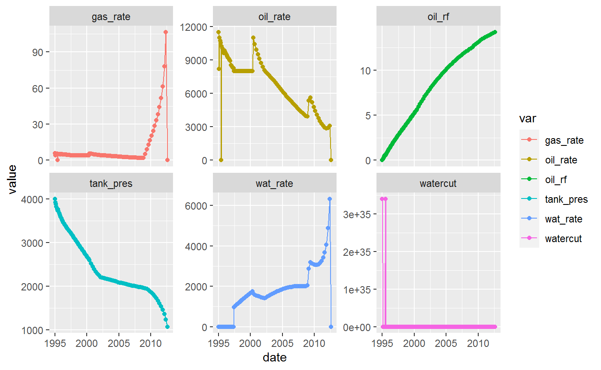

# mbalPredByOoip.R library(rOpenserver) library(ggplot2) library(tidyr) get_mbal_model <- function(model) { # function to get the model filename models_dir <- system.file("models", package = "rOpenserver") model_file <- file.path(models_dir, model) if (!file.exists(model_file)) stop("Model not found ...") else return(model_file) }
# Enter the OOIP and write to MBAL. ooip <- 300
# Initialize OpenServer mbal_server <- OpenServer$new() # Start Prosper cmd = "MBAL.START" mbal_server$DoCmd(cmd)
[1] 0# MBAL opens files a little bit different. The filename needs to be surrounded # with # double quote not single quotes as in Prosper or GAP model_file <- get_mbal_model(model = "oil.mbi") # get the model filename open_cmd <- 'MBAL.OPENFILE' # OpenServer command open_cmd <- paste0(open_cmd, '("', model_file, '")') # compose the command DoCmd(mbal_server, open_cmd) # open the model
[1] 0DoSet(mbal_server, "MBAL.MB.TANK.OOIP", ooip) # write value to MBAL # run prediction DoSlowCmd(mbal_server, "MBAL.MB.RUNPREDICTION") # send command
[1] 0date <- openserver_to_date(DoGet(mbal_server, "MBAL.MB.TRES[2][0][$].TIME")) oil_rf <- rDoGet(mbal_server, "MBAL.MB.TRES[2][0][$].OILRECOVER") oil_rate <- rDoGet(mbal_server, "MBAL.MB.TRES[2][0][$].OILRATE") gas_rate <- rDoGet(mbal_server, "MBAL.MB.TRES[2][0][$].GASRATE") wat_rate <- rDoGet(mbal_server, "MBAL.MB.TRES[2][0][$].WATRATE") tank_pres <- rDoGet(mbal_server, "MBAL.MB.TRES[2][0][$].TANKPRESS") watercut <- rDoGet(mbal_server, "MBAL.MB.TRES[2][0][$]WATCUT")
# build tidy dataframe and plot all variables df <- data.frame(date, oil_rf, oil_rate, gas_rate, wat_rate, tank_pres, watercut) df_gather <- gather(df, var, value, oil_rf:watercut) ggplot(df_gather, aes(x=date, y = value, color = var)) + geom_line() + geom_point() + facet_wrap(var~., scales = "free_y")

# shutdown MBAL Sys.sleep(3) # wait 3 seconds command = "MBAL.SHUTDOWN" mbal_server$DoCmd(command) # send command
[1] 0mbal_server <- NULL # clean OpenServer process